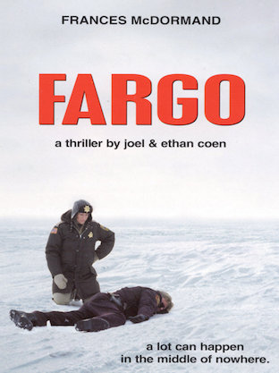

David Fletcher
Student at Le Wagon
Currently learning how to code to have fun with personal and professional projects
- soundcloud
my favorite movies
BrazilSam Lowry, fonctionnaire modèle d'une mégapole étrange, à la fois d'hier, beaucoup d'aujourd'hui et tout à fait de demain, a des problèmes avec sa maman et avec l'Etat, tout puissant. |
|
|  |
FargoUn vendeur de voitures d’occasion endetté fait enlever sa femme par deux petites frappes afin de toucher la rançon qui sera versée par son richissime beau-père. Mais le plan ne va pas résister longtemps à l’épreuve des faits et au flair d’une policière enceinte… |
The SquareChristian est un père divorcé qui aime consacrer du temps à ses deux enfants. Conservateur apprécié d’un musée d’art contemporain, il fait aussi partie de ces gens qui roulent en voiture électrique et soutiennent les grandes causes humanitaires. Il prépare sa prochaine exposition, intitulée « The Square », autour d’une installation incitant les visiteurs à l’altruisme et leur rappelant leur devoir à l’égard de leurs prochains. Mais il est parfois difficile de vivre en accord avec ses valeurs : quand Christian se fait voler son téléphone portable, sa réaction ne l’honore guère… Au même moment, l’agence de communication du musée lance une campagne surprenante pour The Square : l’accueil est totalement inattendu et plonge Christian dans une crise existentielle. |